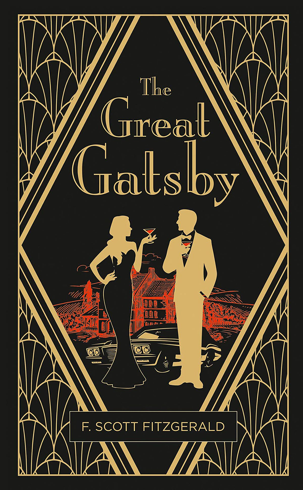

Literature Psychology
Psychology Behind The Great Gatsby: The Illusion of Happiness
Exploring affective forecasting error through the tragic pursuit of Jay Gatsby's green light.
Exploring affective forecasting error through the tragic pursuit of Jay Gatsby's green light.

At some point in life, nearly everyone has chased a dream. It could be the perfect moment, the perfect person, or even the perfect future. Many chase happiness in this perfect reality they dream of. But what if this happiness is just a trick that your brain is playing on you?
Imagine chasing a dream with such determination that you lose sight of all else, only to realize that the happiness you expected to attain was simply a mirage. That's the story of Jay Gatsby, a man who built an empire on dreams and desire.
To Gatsby, the faint glow of the green light from Daisy Buchanan's dock wasn't just a beacon across the bay—it was a symbol of hope, desire, and belief that his dream would bring him happiness. We all have our green lights, but sometimes, the closer we get to our dreams, the further they drift from reality.
The Great Gatsby is a story about affective forecasting error—our brain's tendency to exaggerate how future events will make us feel. Let's break down how this psychological phenomenon shaped Gatsby's tragic fate.
Affective forecasting error, primarily publicized by psychologists Timothy Wilson and Daniel Gilbert, is a psychological concept that describes people's tendency to misjudge future emotions.
Maybe you think that getting accepted into your dream school will make you happier than anything, or that breaking up with someone will leave you devastated forever.
Research shows that people almost always overestimate the intensity and duration of future emotions. When you try to predict how you'll feel after a future event, your brain conducts what is referred to as a mental simulation—the process of playing out scenarios in one's mind in an attempt to experience events before they happen.
This process involves several brain regions:
When the brain tries to simulate future emotions, it usually gets the picture wrong.
Events do not take place exactly as we imagine them. When we envision specific events in our future, our brain focuses mostly on the most extravagant aspects of a situation and often omits small details that may hold significant importance.
For example, you may think that getting your dream job will make you happy all the time, but you might not consider the possible long hours, difficult coworkers, or unexpected challenges. Even our most vivid mental previews are built on incomplete information.
Gatsby's fantasy had grown larger than life, becoming bigger than Daisy herself. His brain had created a future so joyful that no reality could match it.
When imagining future emotions, we almost always overestimate the duration and intensity of an emotion or feeling. Gatsby believed that being with Daisy would grant him lasting happiness. But it didn't occur to him that emotions fade and that life keeps moving forward.
When your brain tries to imagine a future event, it pulls memories from similar past experiences. The problem is, we don't always remember the past accurately. The memories we rely on are often not the best ones to use as a base for our predictions.
An ideal base for a prediction would usually be a typical experience. For example, if you want to imagine your next dental appointment, the most useful memory would be a standard check-up, not the one time you needed emergency root canal surgery.
This occurs when we assume that our future selves will be the same and feel the same way as we do now. Gatsby spent five years dreaming about Daisy with his original romantic obsession, but he failed to realize that people change.
When the moment of their reunion finally arrived, he expected her to feel the way he had felt, but she didn't.
Gatsby's words encapsulate his denial—his refusal to move on from an emotion from five years ago, ignoring the fact that people grow, change, and move on.
Affective forecasting error shows up in everyday life. When your brain convinces you that getting into your dream school will make you happy forever, or that a bad grade will ruin your future, it's creating a distorted version of your reality.
When someone achieves their long-awaited goal and still feels unfulfilled, it can lead to:
Gatsby's story is an example of how our minds can deceive us. His dream, built on an imaginary future, was shaped by affective forecasting error. He believed that reaching his dream would bring lasting happiness, but like many of us today, he misjudged how he'd truly feel.
We've internalized the beliefs that success will bring peace or that failure will ruin us. Just like Gatsby, we all stare at our own green lights across the bay: the perfect partner, job, or future, convinced that reaching them will complete us.
Understanding affective forecasting error doesn't mean we should stop dreaming—it means we should approach our dreams with realistic expectations and appreciate the journey as much as the destination.